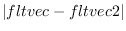

In order for Solaris to execute a program in parallel on many
processors, the program needs to be written as a collection
of functions, each of which is executed by a thread dynamically
created in a process. Although the time required for thread
creation is faster than process creation, it takes a few
mili-seconds for EusLisp to start off a thread after allocating
stacks and setting a page attribute for detecting stack-overflow.
Since this delay, which should be compared to a function invocation,
is intolerable, sufficient number of threads are created by
the make-thread function beforehand and put in
the system's thread pool,
eliminating the need for system calls at evaluation time.
Each thread in the thread pool is represented by a thread object,
as depicted in Fig.7,
consisted of thread-id, several semaphores for synchronization,
and slots for argument and evaluation result transfer.
Figure 7:
Thread-object for transferring control and data between threads (left) and the collection of threads put in the thread-pool.
|  |
2016-03-23